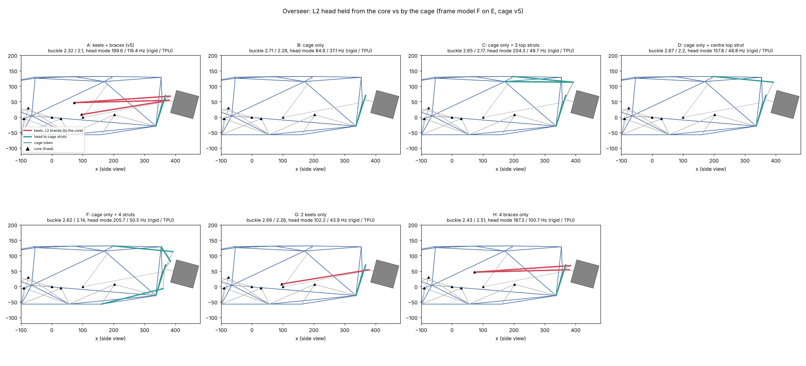

<title>Overseer L2 Mount Options</title>
<meta name="claude:viewport-fit-sides" content="cover">
<style>
/* layout: one column, the comparison picture then the table, a short verdict */
:root{--bg:#f6f7f8;--fg:#1d2329;--muted:#5d6872;--line:#d6dbe0;--accent:#2a7f74;--warn:#b5414f;--pick:#e3f1ee;
--display:"IBM Plex Sans Condensed",system-ui,sans-serif;--body:"IBM Plex Sans",system-ui,sans-serif;--mono:"IBM Plex Mono",ui-monospace,monospace}
@media (prefers-color-scheme:dark){:root:not([data-theme="light"]){--bg:#14181c;--fg:#e4e8ec;--muted:#9aa5ae;--line:#2c343b;--accent:#5cc2b3;--warn:#e07a86;--pick:#183a35;color-scheme:dark}}
:root[data-theme="dark"]{--bg:#14181c;--fg:#e4e8ec;--muted:#9aa5ae;--line:#2c343b;--accent:#5cc2b3;--warn:#e07a86;--pick:#183a35;color-scheme:dark}
body{background:var(--bg);color:var(--fg);font-family:var(--body);line-height:1.5;padding-left:max(16px,env(safe-area-inset-left,0px));padding-right:max(16px,env(safe-area-inset-right,0px));padding-block:24px 48px}
main{max-width:1100px;margin:0 auto;display:grid;gap:20px}
h1{font-family:var(--display);font-weight:600;font-size:1.9rem;margin:0;text-wrap:balance}
h2{font-family:var(--display);font-weight:600;font-size:1.2rem;margin:0}
p{margin:0;max-width:68ch}
.lede{color:var(--muted)}
figure{margin:0;background:#fff;border:1px solid var(--line);border-radius:6px;overflow-x:auto}
figure img{display:block;min-width:900px;max-width:none;width:100%}
figcaption{font-size:.85rem;color:var(--muted);padding:8px 12px;background:var(--bg)}
.wrap{overflow-x:auto}
table{border-collapse:collapse;width:100%;font-size:.92rem;min-width:640px}
th,td{text-align:left;padding:8px 10px;border-bottom:1px solid var(--line)}
th{font-family:var(--display);font-weight:600;color:var(--muted);font-size:.8rem;letter-spacing:.04em;text-transform:uppercase}
td.n{font-family:var(--mono);font-variant-numeric:tabular-nums}
tr.pick td{background:var(--pick);font-weight:600}
.bad{color:var(--warn)} .ok{color:var(--accent)}
.note{display:grid;gap:10px}
code{font-family:var(--mono);font-size:.88em}
</style>
<link rel="stylesheet" href="https://fonts.googleapis.com/css2?family=IBM+Plex+Mono&family=IBM+Plex+Sans+Condensed:wght@600&family=IBM+Plex+Sans:wght@400;600&display=swap">
<main>
<h1>L2 on the cage: what holds it stiff</h1>
<p class="lede">Overseer cage v5, frame model (F on E). Can the lidar hang from the cage alone, without rods from the body? Target: the lidar mount's first mode at 100 Hz or more.</p>
<figure><figcaption>Side view of each option. Red: rods to the body. Green: struts from the head to the cage. Black triangles: the core.</figcaption></figure>
<div class="wrap"><table>
<thead><tr><th>Option</th><th>Rods from body</th><th>Head mode, TPU nodes</th><th>Head mode, rigid nodes</th><th>L2 move, nose hit</th></tr></thead>
<tbody>
<tr><td>A, as now: 2 keels + 4 braces</td><td class="n">6</td><td class="n ok">119 Hz</td><td class="n">200 Hz</td><td class="n">0.5 mm</td></tr>
<tr><td>B, cage only</td><td class="n">0</td><td class="n bad">37 Hz</td><td class="n">85 Hz</td><td class="n">11.7 mm</td></tr>
<tr><td>C, cage + 3 top struts</td><td class="n">0</td><td class="n bad">50 Hz</td><td class="n">204 Hz</td><td class="n">6.0 mm</td></tr>
<tr><td>D, cage + centre top strut</td><td class="n">0</td><td class="n bad">49 Hz</td><td class="n">158 Hz</td><td class="n">6.3 mm</td></tr>
<tr><td>F, cage + 4 struts</td><td class="n">0</td><td class="n bad">51 Hz</td><td class="n">206 Hz</td><td class="n">5.9 mm</td></tr>
<tr><td>G, 2 keels only</td><td class="n">2</td><td class="n bad">44 Hz</td><td class="n">102 Hz</td><td class="n">7.2 mm</td></tr>
<tr class="pick"><td>H, 4 braces only (chosen)</td><td class="n">4</td><td class="n ok">101 Hz</td><td class="n">187 Hz</td><td class="n">0.6 mm</td></tr>
</tbody></table></div>
<section class="note">
<h2>Result</h2>
<p>On TPU nodes every cage-only option stops near 50 Hz, however many cage nodes the head grabs. The cage sits soft on its TPU joints, so the lidar would be half as stiff as the target and would move about 6 mm in a nose hit.</p>
<p>Chosen for now: keep the 4 L2 braces and drop the 2 keels. That is 4 rods from the body instead of 6, at 101 Hz. If a softer lidar mount (about 50 Hz) is acceptable, option D needs no body rods at all.</p>
<p>The TPU stiffness is an estimate (E 26 MPa). The rod coupons can measure it.</p>
</section>
</main>
